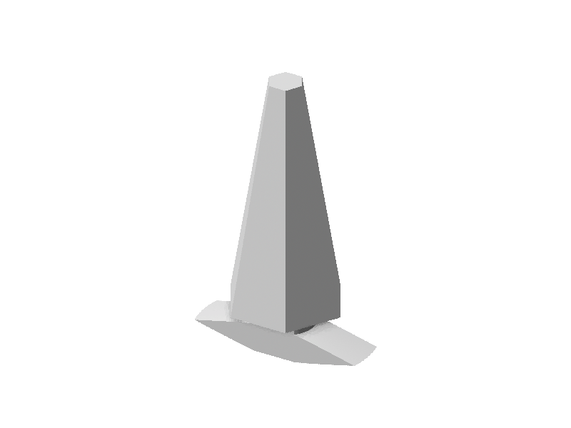
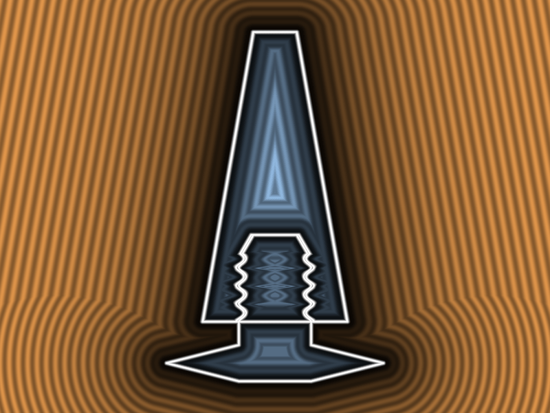

spike
Drafted with AI, not yet reviewed
A stud that screws through fabric: a base with a twisted-ellipse thread passes through the fabric’s hole and a hexagonal spike screws onto it; two drivers hold the parts while they are screwed together.
Ported from src/fabric/spike.scad. Differences:
- Circles are round: the original’s are 24-gons, the thread’s twist is OpenSCAD’s default slices (under 0.03 mm).
- The base’s profile is revolved from its points, from the axis out, so its field is exact inside too.
- The fabric, a reference drawing in the original, is not drawn.
Compared with the original: within 0.024 mm.



Files
Source
// SPDX-License-Identifier: 0BSD // // A stud that screws through fabric: a base with a twisted-ellipse thread // passes through the fabric's hole and a hexagonal spike screws onto it; // two drivers hold the parts while they are screwed together. // // Ported from `src/fabric/spike.scad`. Differences: // - Circles are round: the original's are 24-gons, the thread's twist is // OpenSCAD's default slices (under 0.03 mm). // - The base's profile is revolved from its points, from the axis out, so // its field is exact inside too. // - The fabric, a reference drawing in the original, is not drawn. // // Compared with the original: within 0.024 mm. // --- Parameters --- const PART = "all"; // "all", "slice", "spike-base", "spike-tip", "driver-base" or "driver-tip" const FABRIC_THICKNESS = 1.6; const FABRIC_HOLE_R = 2.5; const SPIKE_LENGTH = 20.0; const SPIKE_BASE_R = 5.0; const SCREW_LENGTH = 6.0; const SCREW_PITCH = 2.5; const SCREW_FACTOR = 1.25; // the thread's ellipse, its long axis over its short one const COUNTER_THICKNESS = 2.5; const COUNTER_R = 7.5; const DRIVER_LENGTH = 15.0; const E = 0.01; const T = 0.15; // the gap of a hole round its part // --- Parts --- // The thread: an ellipse twisted a turn per pitch, cut to a cone; `o` grows // it, for the hole it screws into. fn screw(o) { let r = global::FABRIC_HOLE_R / global::SCREW_FACTOR + o; let h = global::SCREW_LENGTH; ellipse([r * global::SCREW_FACTOR, r]) .extrude([0, h], #{twist: 360 * h / global::SCREW_PITCH}) .intersection(cone([h - 1 + o, global::FABRIC_HOLE_R - 1 + o], [0, h])) } // The footprint of the base and the drivers' grip. fn base_rect() { rect([global::COUNTER_R * 2, global::FABRIC_HOLE_R * 2 * 0.7]) } fn spike_base() { let r = global::FABRIC_HOLE_R; let t = global::FABRIC_THICKNESS; let c = global::COUNTER_THICKNESS; let profile = [[0, global::E], [r, global::E], [r, -t], [global::COUNTER_R, -t - c / 2], [r, -t - c], [0, -t - c]]; union(revolve(profile), screw(0.0)) .intersection(base_rect().extrude(global::SCREW_LENGTH * 3)) } // The spike, a hexagonal frustum; with `hole`, threaded inside. fn spike_tip(hole) { let tip = cone([global::SPIKE_BASE_R, 1.5], [global::E, global::SPIKE_LENGTH + global::E], #{sides: 6}); if hole { tip.difference(screw(global::T)) } else { tip } } // The base's driver: a rounded block whose rim grips the base's foot. fn driver_base() { let outside = base_rect().offset(3); let grip = outside.difference(base_rect().offset(global::T)); union(outside.extrude([0, global::DRIVER_LENGTH - 3]), grip.extrude([0, global::DRIVER_LENGTH])) } // The spike's driver: a hexagonal block with the spike's shape cut into it. fn driver_tip() { cylinder(10, [global::E * 2, global::DRIVER_LENGTH + global::E * 2], #{sides: 6}) .difference(spike_tip(false)) } // --- Display --- switch PART { "all" => { draw(spike_base()); draw(spike_tip(true)); } "slice" => { draw(spike_base().intersection(-y)); draw(spike_tip(true).intersection(-y)); } "spike-base" => draw(spike_base().rotate_x(90)), "spike-tip" => draw(spike_tip(true)), "driver-base" => draw(driver_base()), "driver-tip" => draw(driver_tip()), }